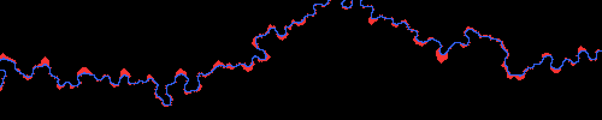
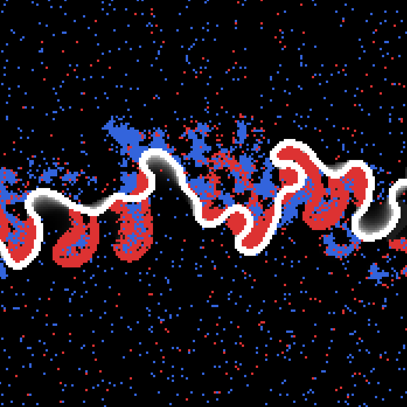
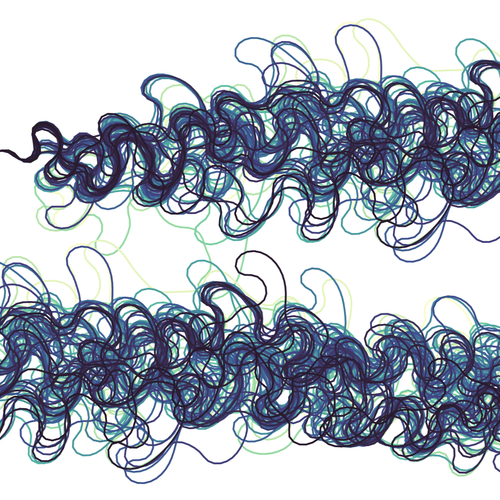

Meander Drift (2026)
Asymmetric meander migration produces a systematic along-valley drift of river-seeking agents on the floodplain. The drift direction is set by the curvature-migration phase lag.

Human-River Geomorphic Coupling (2026)
A cellular automaton model of how settlements and meandering rivers co-evolve: people cluster near rivers for economic benefit while the river erodes what is built beside it.

Meander Cutoffs Induce Chaos (2025)
We show that neck cutoffs alone are sufficient to produce chaotic dynamics in kinematic river channel evolution, imposing a finite predictability horizon on planform modeling. Submitted to Communications Earth & Environment.